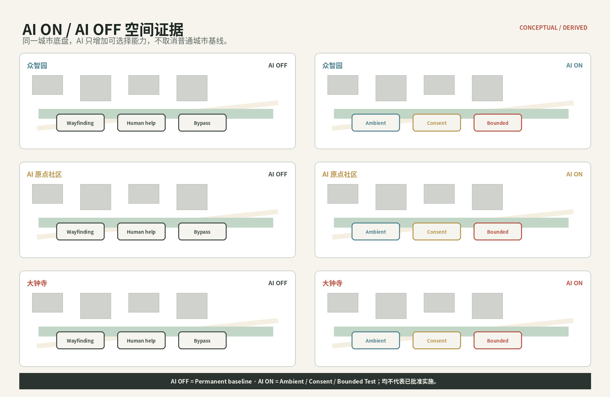

总览地图 · 三层范围

用地分区 · 建筑

重点区域

交通慢行 · 蓝绿公共空间

Public Capability Interface

Landmark as Memory

AI 场景 · UAR

City Version Release · 更新项目

20-year Legacy

核心指标 · 任务覆盖
11.413 km²provisional site
10.37%proposed green
0.45%PCI/landmark envelopes
12 / 8 / 4场景 / personas / 测试验证
自检状态 · 来源 · 假设
双语正文、结构化数据、图件、A3/A0、HTML 与矩阵已同步。OSM 已 live materialize 5,532 个可用 features / 1,898 个建筑面并仅作候选证据；Microsoft 当前公开索引对目标 quadkey 无发布分区。官方 polygon、控规、权属与现场核验仍是明确 Unknown。
OfficialVerifiedDerivedAssumedUnknownKnownEstimatedProposed
sources.json · assumptions.json · metrics.json · compliance_matrix.json · standard_matrix.json · design_depth_matrix.json
五条城市剖面

区域能力交换

AI ON / AI OFF · Offline Three.js Reviewer
同一城市底盘比较 Permanent baseline 与可选择 AI 能力。全部本地打包，无 CDN / 远程地图 / 网络 API。

离线 Three.js · AI ON / AI OFF
同一城市底盘；可选择 AI 能力不取消普通城市基线。 Derived / KEY_AREA provisional / not statutory.
Loading local model…
AI OFF · permanent civic baseline
LOCAL · OFFLINE · CONNECT-SRC NONE
Keyboard: 1–3 / O / I / R. Drag to orbit, wheel to zoom.